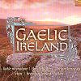

Celtic Lyrics Corner > Compilations > Gaelic Ireland > Cill Chais
|  | Cill Chais |
| Credits : | n/a |
| Appears On : | Gaelic Ireland (compilation) |
| Language : | Gaeilge (Irish Gaelic) |
| Other Versions : | " Cill Chais " on The Cassidys' album Singing From Memory |
| Lyrics : | English Translation : |
| Cad a dhéanfaimid feasta gan adhmad? | What shall we do without timber? |
| Tá deireadh na gcoillte ar lár | The woods have all been cut down |
| Níl trácht ar Chill Chais ná a teaghlach | There's no mention of Cill Chais or its people |
| 'S ní chluinfear a cling go brách | The peal of bells is no more |
| An áit úd 'na gcónaíodh an dei-bhean | The place where the lady resided |
| Fuair gradam is meidhir thar mnáibh | Who was held in esteem above all |
| Bhíodh iarlaí ag tarraingt thar toinn ann | Where earls and nobility frequented |
| 'S an t-Aifreann binn dá rá | And the sonorous Mass was heard |
| Ní chluinim fuaim lachan ná gé ann | Geese and ducks can no longer be heard |
| Ná iolar ag éamh cois cuain | Nor the eagle cry in the bay |
| Ná fiú na mbeacha chun saothair | Nor the hum of the bees as they labor |
| Thabharfadh mil agus céir don tslua | Storing honey and wax for all |
| Níl ceol binn milis na n-éan ann | We miss the sweet tones of birdsong |
| Le hamharc an lae dul uainn | As the day fades in the west |
| Ná an chuaichín i mbarra na gcraobh ann | Or the call of the cuckoo each evening |
| Ó's í chuirfeadh an saol chun suain | Calling the people to rest |
| Aicim ar Mhuire 's ar Íosa | I implore Jesus and Mary |
| Go dtaga sí arís chughainn slán | That she will one day return |
| Go mbeidh rincí fada 'gabháil timpeall | To her people who will be rejoicing |
| Ceol fidil 's tinte cnámh | With bonfires and fiddles and song |
| Go dtógfar an baile seo ár sinsear | That this great home of our ancestors |
| Cill Chais bhreá, arís go hard | The beautiful Cill Chais be restored |
| Is go brách nó go dtiocfaidh and díle | And until the Day of Judgement |
| Ná feicfear é arís ar lár | Will it never again lay low |